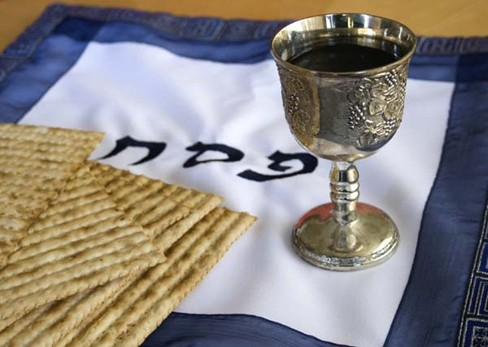

Adoración AT
"El NT está en el AT como el fruto en la flor"
Jerónimo de Estridón
En el Libro del Éxodo, 3,18 EL Señor le dice a Moisés que pida al faraón salir de Egipto para ir al desierto a adorar a Dios. Vendrán las plagas que son una pedagogía de lo que Vivian los israelitas en esta tierra con la intención de que recapacitaran los egipcios, en capitulo 12, versículo 14 el mismo Señor Dios da una orden a Moisés:
Ustedes harán recuerdo de este día año tras año
y lo celebraran con una fiesta en honor a Yahvé
esta ley es para siempre: los descendientes de ustedes NO dejaran de celebrar este día.(Perpetua)
Con estas palabras Adonai establece la fiesta perpetua de la Pascua, o como la llaman los hebreos Jag Hapesaj, fiesta que va a hablar al corazón israelita de la liberación de la esclavitud egipcia y con el correr del tiempo de la esperanza de la venida del Mesías prometido. Dice un texto hebreo al referirse a la Pascua “ sirve también de etapa en el camino de la redención y testimonio del privilegio, arduamente obtenido de ser hombres libres”. Una tradición de la época bíblica decía que la redención se efectuaría en el mes de Nisan (Abril), en tiempo de la Pascua. La Pascua es pues tiempo de redención y de liberación.
Cual era el punto culminante de esta festividad? Se puede decir que el punto culminante era en dos etapas. La primera, el sacrificio del cordero pascual y el rociamiento de los marcos de las puertas con su sangre y en segundo lugar la cena pascual.
El Sacrificio Pascual del cordero nos lo narra también el Libro del Éxodo, “ tendría que ser de un cordero de un año, macho y se sacrificara a la caída de la tarde, el sacrifico se efectuaría en el templo, la sangre del cordero se sacaba y se depositaba en un recipiente el cual era llevado a la casa para rociar las puertas en sentido de salvación sobre la muerte” (reminiscencia de la noche de Egipto)
Israel para salir de Egipto a adorar primero debería de ser libre, la libertad es el requisito previo para adorar.
La adoración es verdadera cuando se hace según Dios manda, el becerro de oro es la adoración según los hombres. La adoración tiene al sacrificio como elemento constitutivo.
La adoración necesita de una victima y de un altar, el sacrificio es la transformación de la victima
En aquellos tiempos solo se podia sacrificar en Jerusalén, un sólo altar y un sólo templo
se hacían sacrificio para perdón de pecados, acción de gracias allí confesaban sus pecados, ponían la mano sobre el animal y lo sacrificaban; prefigura a cristo en la cruz
Solo habían 2 pecados que no se perdonaban: el asesinato voluntario y el adulterio.
El altar estaba delante del arca, indicando que el pecado era una violación de la Ley
El Señor al morir dice "Todo se ha cumplido" (La Ley del AT y las Profecías) y el La cortina del templo se rasga de arriba abajo, dando a entender que es Dios quien lo hace, vivimos un Nuevo Pacto, que tiene sus fundamentos en el Antigu, donde la iglesia es el nuevo pueblo del Señor
Resumen
La adoración se inicia con la obediencia, que conduce a la libertad, se materializa en un holocausto/ sacrificio, necesita una victima y un altar.
El primer mandamiento es adorar, solo se puede hacer en libertad, la predicación del evangelio es el medio de caminar a la libertad y corresponde a cada cristiano como miembro de la iglesia adorar. La adoración se evidencia en la obediencia
Como se celebraba la Cena Pascual?
Esta cena tenia un carácter litúrgico que se centraba en el Hagada shel pesaj y que es un libro que contiene el relato del Éxodo sobre la liberación de Israel, comentarios de la Midrash, material del Talmud, plegarias, bendiciones y Salmos, todo esto proveniente de la época del Segundo Templo y el Seder que es el orden en que se desarrolla esta cena.

La Cena Pascual se compone de los siguientes elementos:
1) Kadesh o santificación que no es mas que la recitación de la bendición sobre el vino.
2) Rejatz o lavado de las manos
3) Carpas, verduras, generalmente perejil o rábano remojado en agua salada
4) Yajatz, división de la Matza intermedia (tres panes sin levadura) con el AFIKOMEN para el (postre) que se esconde y se busca al final de la cena, partiéndose y repartiéndose entre los invitados.
5) Maguid, Relato de la historia (hagada) con sus cuatro preguntas y la consiguiente narración
6) Rajatz, segundo lavado de las manos por todos los presentes antes de partir el pan
7) Motzi-Matza, Bendiciones sobre el pan
8) Maror, hierba amarga remojada en Jaroset (mezcla de manzanas y nueces)
9) Corej, comida de matza y maror
10) Shuljan Orej, mesa para la comida del seder
11) Tzafun, búsqueda del Afikoman ( quien lo encuentra recibe un premio) y su comida como ultimo recuerdo del cordero pascual
12) Barej, bendición y acción de gracias
13) Nirtzah, despedida del Seder.
Este es el orden de la cena Pascual desde los tiempos Bíblicos hasta el día de hoy, comida llena de simbolismo, donde se mezcla el cordero inocente que muere por la salvación de Israel y la esperanza de la futura redención simbolizada en las cuatro copas del seder.
1. Copa de la Bendición
2. Copa las Plagas
3. Copa de la Redención
4. Copa de las Alabanzas
5. Copa de Elias
Estas copas recuerdan la Redención y se asocian como enseñanza y mensaje a los cuatro términos de la redención mencionados en el Éxodo: “Os sacare …..Os libertaré…..os redimiré….y os tomaré para mi como pueblo” Éxodo 6, 6-7 y la quinta copa que recuerda que el Mesías vendrá en este mes a redimirnos.
Los Evangelios nos relatan que Jesús como judío sujeto a la Ley, celebro la Pascua, sobre todo la ultima en víspera de su muerte, cuando dijo según San Lucas 22, 15
“ En verdad he deseado MUCHÍSIMO comer esta Pascua con ustedes ”.
Esta Pascua seria La Pascua de las Pascuas. Toda las antiguas celebraciones Pascuales eran prefigura de esta que Jesús comienza la víspera de su pasión, el lema de Liberación y Redención nunca seria tan real y cumplido como esta noche, además esta Pascua seria el enlace entre la antigua Pascua y la Nueva, Jesús mismo nos daría la pauta de como celebrarla.
En el Evangelio de San Juan en su comienzo (Juan 1, 36) se nos presenta a Jesús con un titulo inusual…Juan el Bautista llama a Jesús “Cordero de Dios” titulo nunca dado a ningún personaje bíblico, titulo que relacionaba a Jesús con el “Cordero Pascual” que refrescando nuestros conocimientos “ moría por la salvación de los que se cobijaban bajo su sangre y se comía íntegramente en la Cena-celebración de la Pascua.